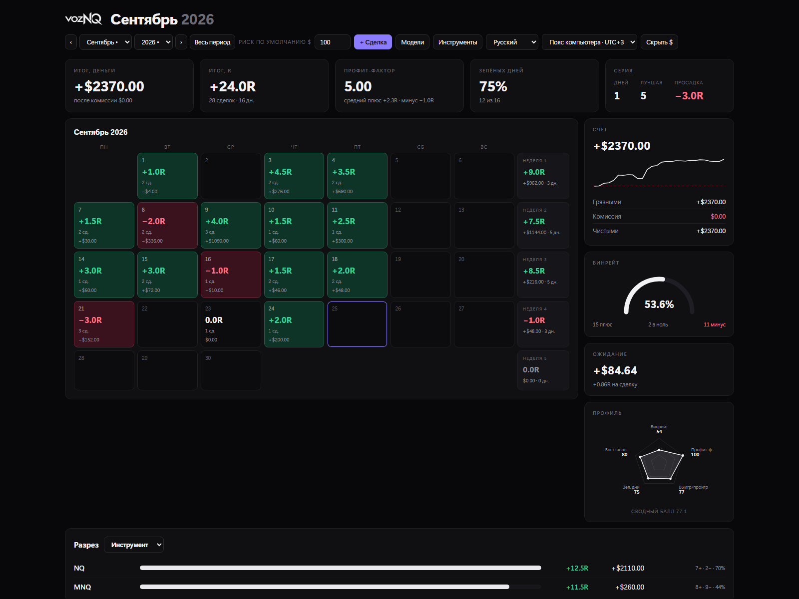
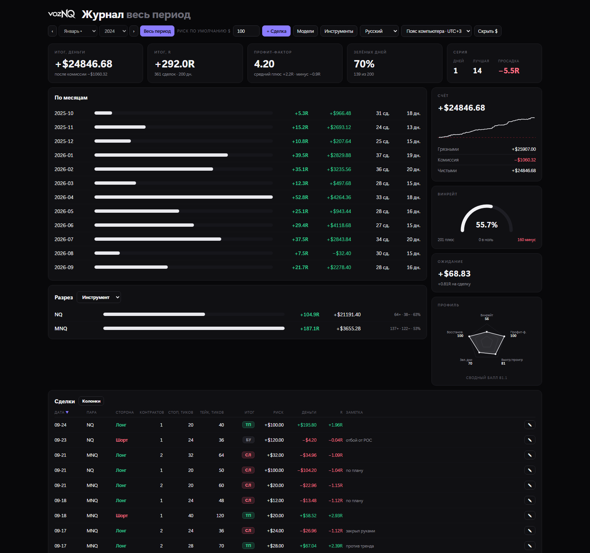
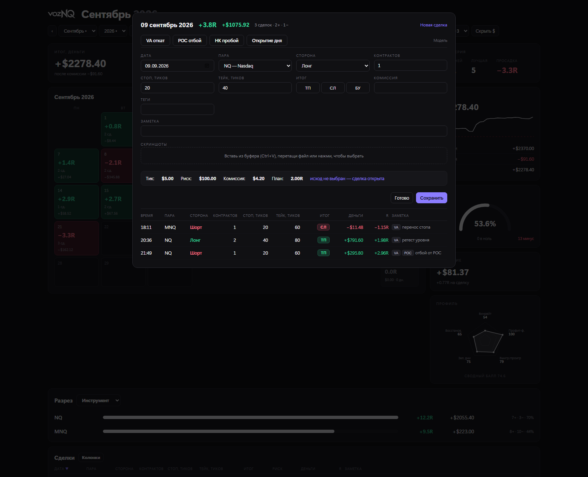
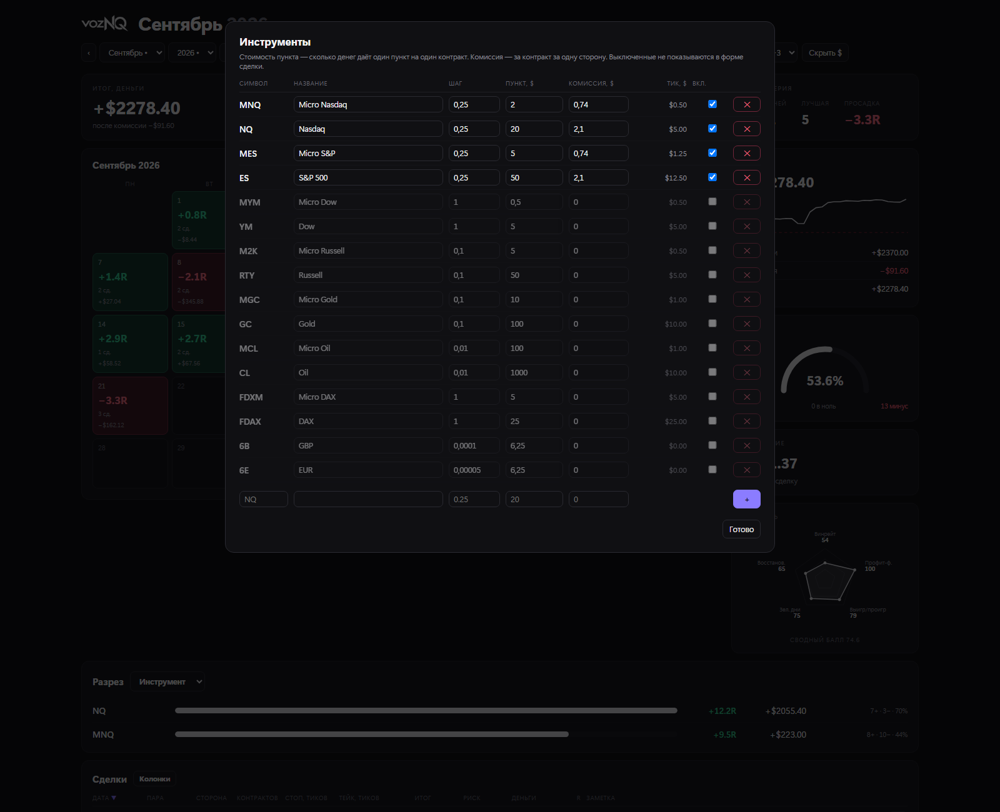

4
готовых продукта,
и все работают
и все работают
Портфолио · Румыния / Украина · удалённо, Великобритания, США, Европа
AI Product Developer / AI Solutions Engineer / AI Automation Specialist
Четыре проекта за последние полтора года, в одиночку, в четырёх разных технических областях — спецификация, архитектура, реализация. Один каждый день работает на живом торговом счёте, другой начинает переводить раньше, чем собеседник договорил фразу, третий ставит подменённое лицо в прямой эфир за ~100 мс, четвёртый держит 18 моделей за одним окном чата. Все четыре готовы и работают — каждый ролик и каждый скриншот здесь сняты с работающего приложения.
Настольный журнал для фьючерсной торговли: внести сделку, перечитать месяц, понять, какая модель входа действительно себя окупает. Шесть аналитических разрезов над одной базой и год истории, которая остаётся верной при смене инструмента под ней.
Разбор, 30 с: как вносится сделка, месячный календарь, на что отвечает разбивка. Открыть файл ↗
Сделка записывается расстоянием в тиках и инструментом, на котором она была взята. Доллары, R-кратности и вся статистика выводятся уже при чтении — из стоимости тика и комиссии этого инструмента.
Что это дало: сменили контракт или объём позиции — и вся история пересчиталась сама. Таблица в этом месте продолжает показывать старые цифры и никак об этом не сообщает.
Интерфейс — HTML, который рисует WebView2, уже встроенный в Windows. Логика под ним — стандартная библиотека Python и SQLite: ни фреймворка, ни стороннего пакета.
Что это дало: журнал поставляется одним исполняемым файлом на 13,6 МБ. Он открывается на машине, где ничего не подготовлено, и через год нечему ломаться в зависимостях.

Месяц — календарь и кривая
Всё время — 361 сделка, 200 дней
День — сделки и исходы
Инструменты — тики и комиссияВы говорите по-русски, собеседник слышит английский синтезированным голосом — и так в обе стороны, не прерывая разговор. Распознавание, перевод и речь считаются на машине: разговор не покидает комнату.
Разбор, 30 с: путь от микрофона до переведённого голоса и на что уходит задержка. Открыть файл ↗
Звук режется на фразы прямо по ходу речи, а не после паузы, и готовый кусок уходит в распознавание, пока следующий ещё произносится. Голос начинает говорить по той части, которая уже переведена.
Что это дало: замеренные 275–520 мс от конца фразы до первого переведённого звука — в работе остаётся только хвост. Система, которая дожидается конца высказывания, платит за него целиком.
Машинный перевод сам по себе попадал примерно в 70% случаев на моём материале. За ним стоит слой качества: словарь терминов, которые не должны плыть, правки для конструкций, которые модель ломает стабильно, и проверка, что на выходе вообще получилось предложение.
Что это дало: 97% на отложенном наборе, под который правила не писались, — та цифра, которую стоит называть, а не более высокая с материала, на котором их настраивали.
 Окно — языки, звук, движок
Окно — языки, звук, движок
 Словарь — термины, которые не должны плыть
Словарь — термины, которые не должны плыть
 Настройка и приватность — проверка звука, что хранится
Настройка и приватность — проверка звука, что хранится
Подменяет лицо в живом потоке с камеры прямо во время съёмки и отдаёт готовую картинку в OBS обычным окном — ни плагина, ни драйвера виртуальной камеры, ставить в OBS ничего не нужно. Детекция, 106 точек, вектор личности, генерация и разбор лица на области проходят на каждом кадре.
Разбор, 30 с: поиск лица, 106 точек, подмена и передача картинки в OBS. Открыть файл ↗
Тридцать кадров в секунду оставляют 33 мс на все пять сетей — Python отпал сразу. Приложение написано на C++17 с ONNX Runtime на CUDA, и кадр остаётся в видеопамяти от захвата до сборки итоговой картинки: между стадиями его не копируют обратно в оперативную. Каждая стадия показывает свои миллисекунды на экране.
Что это дало: около 100 мс от камеры до эфира — и медленный кадр, у которого есть имя, а не пожатие плечами.
Сгенерированное лицо вписывается по карте разбора, посчитанной на этом же кадре, поэтому волосы, очки и рука, проходящая перед щекой, остаются на месте. Собственные рот и глаза можно не трогать.
Что это дало: попадание в губы остаётся точным, потому что на экране двигается настоящий рот — та деталь, по которой подмену замечают раньше всего.
«AI-generated face effect» ставится последней, поверх всего, и выключателя у неё нет. Площадки срезают метаданные, поэтому строка, записанная в пиксели, — единственная, которая переживает перекодирование, скачивание и повторную заливку.
Пришлите фото, голосовое, таблицу или просто ссылку — ответит та из моделей, которая подходит под этот вопрос, в том числе когда тема посреди разговора ушла в сторону и вернулась обратно. Ни режима выбирать, ни команд учить.
Каждое сообщение сначала читается на намерение — что за задача, нужно ли зрение, длинный контекст или код, — и из этого получается и тема вопроса, и порядок моделей, к которым идти. Оценки, которые пользователи ставят ответам, меняют, кто победит в следующий раз.
Что это дало: никому не нужно знать, какая из восемнадцати моделей в чём хороша, а девятнадцатую можно добавить, не меняя ни одной привычки пользователя.
Потребительские подписки на ИИ можно перепродавать, гоняя их через перехваченные сессии браузера, — так сделана изрядная часть таких ботов. Этот работает на платных API провайдеров.
Что это дало: сервис, который продолжает работать на той неделе, когда провайдер закручивает гайки, а не исчезает вместе с аккаунтом, на котором ехал.
Telegram, бизнес-логика, провайдеры и хранилище разведены, и границы между ними соблюдаются. Новая модель — правка в слое провайдеров, новый язык интерфейса — в представлении, арифметика тарифов лежит в одном месте и со своим набором тестов.
Что это дало: восемнадцать провайдеров и три языка, накопленные со временем, не превратили код в клубок.
Бот запускается с одним ключом провайдера — хватает бесплатного Gemini. Платформа без ключа вообще не появляется в меню, а не появляется и ломается при нажатии. Ничто в интерфейсе не выглядит живым, ничего при этом не делая.
Как я работаю
Настольное приложение, конвейер реального времени на видеокарте, локальный речевой ИИ и сервис поверх восемнадцати провайдеров не делят ни строчки кода и почти не делят словарь. Общее у них — то, как каждый был решён, построен и проверен; и переносится на чужой продукт именно эта часть.
Что вещь обязана делать, у кого она в руках и что сделает её бесполезной — записано до того, как появилась архитектура. Споры, которые иначе приходят на шестой неделе, проходят на первой странице, пока передумать ничего не стоит.
У каждого продукта есть одно ограничение, задающее его форму: 33 мс на кадр, трейдер, который не станет ставить среду исполнения, стример, у которого нет лишнего монитора под окно вывода. Я нахожу то, которое действительно держит, и строю от него.
Задержка разложена по стадиям и показана прямо во время работы, точность снята с материала, которого правила не видели. Любая цифра, которую я не могу воспроизвести по требованию, не попадает ни на эту страницу, ни в разговор.
Функция, которая не может работать, показана выключенной, причина рядом. Когда камера отдаёт не тот формат пикселей, приложение так и говорит, вместо того чтобы оставить человека с плохим fps и догадками.
Я ставлю требования, решаю, как продукт себя ведёт, принимаю архитектурные решения и проверяю каждую сборку на реальной работе; код пишется вместе с ИИ-помощником. Именно поэтому один человек закрывает четыре технические области за полтора года — и ровно тот же рычаг я приношу в команду.
Репозитории остаются закрытыми: здесь доказательство, а не исходники. Готов разобрать любую часть кода на созвоне, запустить что угодно из этого вживую при вас или отдать отдельный модуль.
Что дальше
Проект попадает на эту страницу после того, как он закончен и работает, — поэтому она наполняется медленно, зато всё на ней готово. На четырёх работа не остановилась.
Все четыре собраны, протестированы и работают — журнал каждый торговый день на живом счёте. И каждый развивается после релиза: журнал получает новый разрез, когда этого требует очередной месяц торговли, бот получает модели по мере их выхода у провайдеров, а маска переезжает с захвата окна на полноценную виртуальную камеру.
Ещё несколько строятся прямо сейчас и попадут сюда на тех же условиях, что и эти четыре: законченными, измеренными и работающими. Страница пополняется готовыми продуктами, а не анонсами.
Роль, где всё это пойдёт в продукт компании: ИИ-функции, агенты, голос, автоматизация — то расстояние между ещё размытым требованием и вещью, которую клиент открывает. Удалённо, полная занятость или контракт, Великобритания, США или Европа. Быстро вхожу в чужую предметную область и предпочитаю отвечать за результат, а не за очередь задач.
Обновлено 25 сентября 2026 · по истории коммитов на GitHub видно, как часто эта страница меняется.
Связь
Созвон на русском или английском. Если хотите увидеть что-то конкретное — математику тиков, разбор задержки, тесты тарифов — скажите, что именно, и я открою эту часть на экране.
{kind=link}
{kind=link}
{kind=link}
{kind=link}